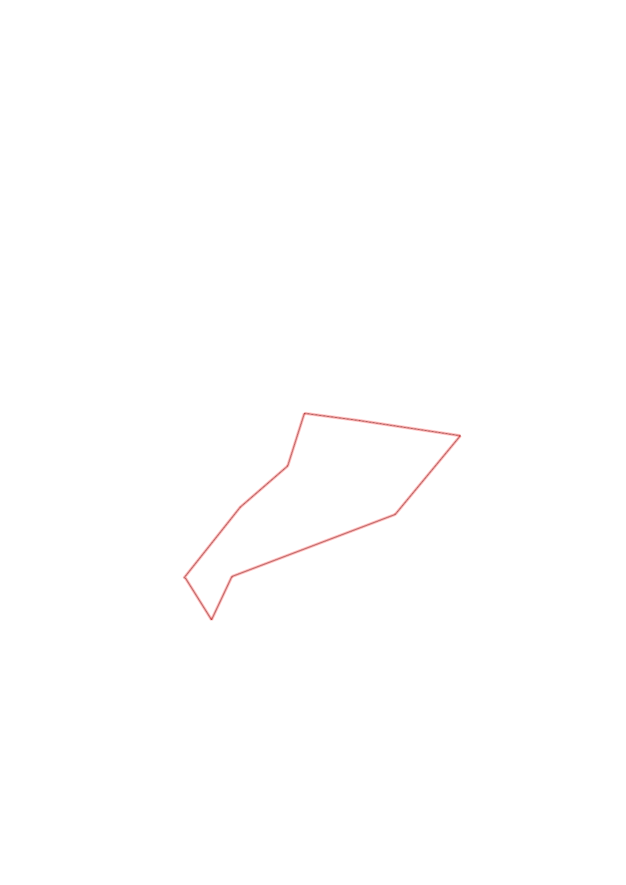
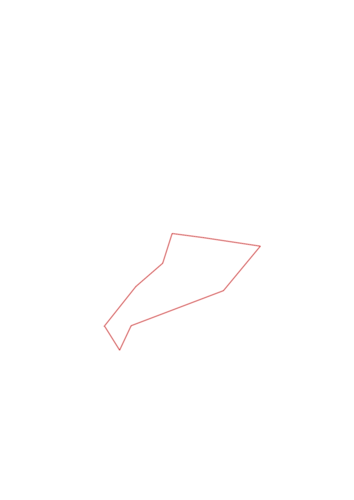

| Control |
Points |
Time Punched |
Distance |
Your Time |
Pace |
Place |
Fastest Time |
Median Time |
% Behind Fastest |
| 41 |
40 |
|
0.46 |
0:04:00 |
08:41 |
1 / 1 |
0:04:00 |
0:04:00 |
0% |
| 91 |
90 |
|
0.32 |
0:05:06 |
15:56 |
6 / 6 |
0:04:09 |
0:04:33 |
22% |
| 36 |
30 |
|
0.28 |
0:05:17 |
18:52 |
4 / 4 |
0:01:58 |
0:03:32 |
168% |
| 59 |
50 |
|
0.28 |
0:03:24 |
12:08 |
3 / 3 |
0:02:32 |
0:02:41 |
34% |
| 81 |
80 |
|
0.51 |
0:07:41 |
15:03 |
1 / 1 |
0:07:41 |
0:07:41 |
0% |
| 60 |
60 |
|
0.52 |
0:05:17 |
10:09 |
3 / 3 |
0:03:09 |
0:03:53 |
67% |
| 63 |
60 |
|
0.88 |
0:15:24 |
17:30 |
3 / 3 |
0:08:22 |
0:09:02 |
84% |
| 37 |
30 |
|
0.24 |
0:04:29 |
18:40 |
3 / 4 |
0:02:22 |
0:03:29 |
89% |
| Finish |
0 |
|
0.25 |
0:09:07 |
36:28 |
3 / 3 |
0:01:04 |
0:02:58 |
754% |
Total Distance Covered: 3.74km
Points Scored: 440
Late Penalty: 0
Final Score: 440
Total Time: 0hours 59minutes 45seconds
Efficiency: 117.65 points/km
 
